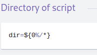
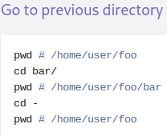

HTML
Home
JavaScript Programming Page
Java Programming Page
Cpp Programming Page
C# Programming Page
R Programming Page
C Programming Page
Python Programming Page
Batch Scripting Page
Bash Scripting Page
SQL Page
Assembly Language Page
Powershell
ccna
Manipulation
Bash options
Rediction


grep check
getting options
Check for command's result
Bash scripting cheatsheet
SS64